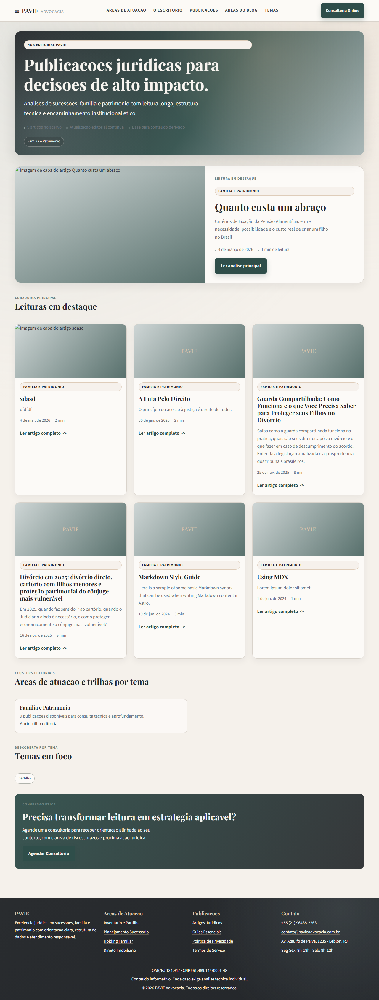
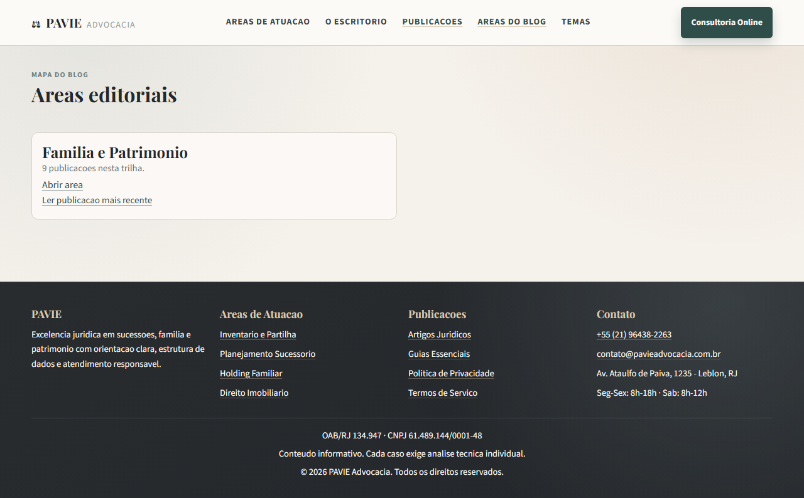
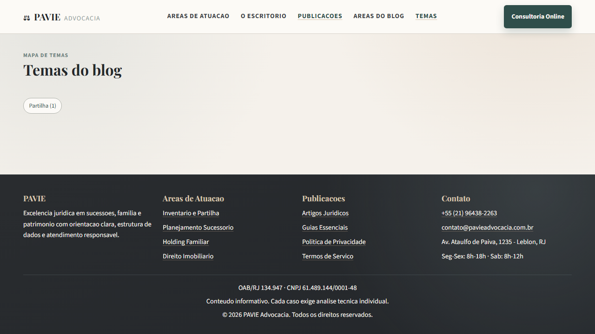
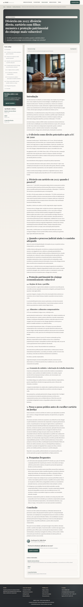
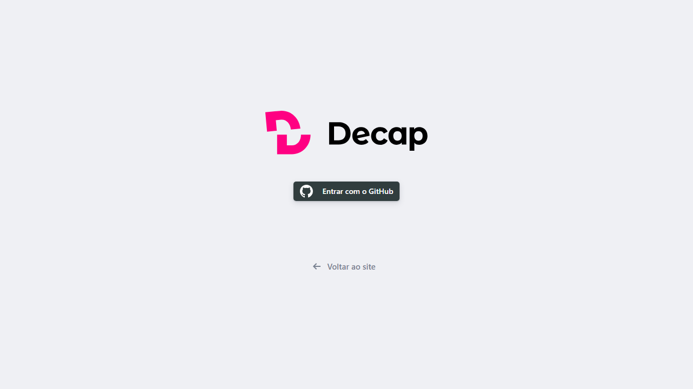

Visão geral da página inicial.
Hub editorial com destaques e trilhas.

Página de descoberta por áreas editoriais.

Página de descoberta por temas.

Template de leitura com TOC, CTA e relacionados.

Interface de administração do CMS.